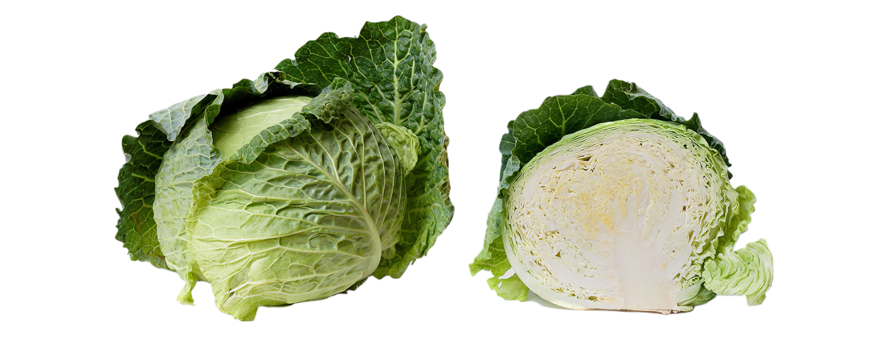

Cabbage!
Brassica oleracea

...About Cabbage
- Brussles sprouts are the same species of plant as cabbage, just a bud-forming variety (gemmifera)
- Brussels sprouts originated in Belgium, which is why they are named "brussels" sprouts not "brussel" sprouts.
- Broccoli, caulifower, kale, and kohrabi (among others) are also varieties of cabbage, cultived for their individual properties and appearances.
- Wild cabbage is native to Soutern and Western Europe.
- Members of the Brassica genus are
known as cruciferous vegetables.
- Scott Robb from Palmer, Alaska holds the world record for the heaviest cabbage (138.25 lbs) and heaviest kohlrabi (96.9lbs).
Look at this cabbage!!!